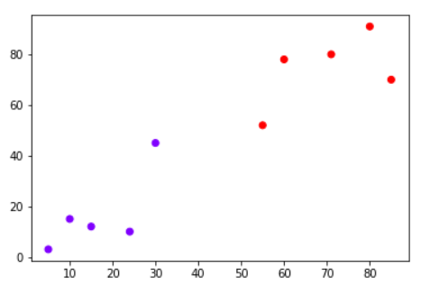
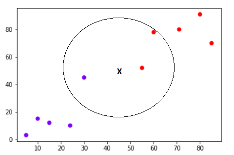
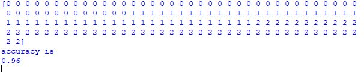
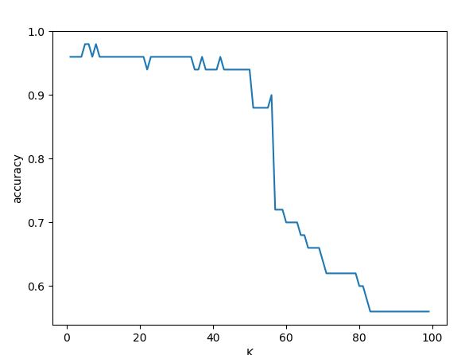
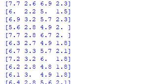

K-Nearest Neighbors Pada Python dengan Menggunakan Scikit-Learn¶
Algoritma K-tetangga terdekat (KNN) adalah jenis algoritma pembelajaran mesin yang diawasi. KNN sangat mudah diimplementasikan dalam bentuk paling dasar, namun melakukan tugas klasifikasi yang cukup kompleks. Ini adalah algoritma pembelajaran yang menggunakan semua data untuk training sambil mengklasifikasikan titik atau contoh data baru. KNN adalah algoritma pembelajaran non-parametrik, yang berarti bahwa itu tidak mengasumsikan apa pun tentang data yang mendasarinya. Ini adalah fitur yang sangat berguna karena sebagian besar data dunia nyata tidak benar-benar mengikuti asumsi teoretis, misalnya linear-separability, distribusi seragam, dll
Teori K-NN¶
Intuisi di balik algoritma KNN adalah salah satu yang paling sederhana dari semua algoritma pembelajaran mesin yang diawasi. Ini hanya menghitung jarak dari titik data baru ke semua titik data training lainnya. Jarak dapat dari jenis apa pun, misalnya Euclidean atau Manhattan dll. Kemudian akan memilih titik data K-terdekat, di mana K dapat berupa bilangan bulat apa pun. Akhirnya ia memberikan titik data ke kelas tempat mayoritas titik data K berada.[1]
Perhatikan algoritma ini dalam aksi dengan bantuan contoh sederhana. Misalkan Anda memiliki dataset dengan dua variabel, yang ketika diplot, terlihat seperti pada gambar berikut :

Tugas Anda adalah untuk mengklasifikasikan titik data baru dengan 'X' ke dalam kelas "Biru" atau "Merah". Nilai koordinat titik data adalah x = 45 dan y = 50. Misalkan nilai K adalah 3. Algoritma KNN dimulai dengan menghitung jarak titik X dari semua titik. Kemudian menemukan 3 titik terdekat dengan jarak paling sedikit ke titik X. Ini ditunjukkan pada gambar di bawah ini. Tiga titik terdekat telah dilingkari

Langkah terakhir dari algoritma KNN adalah untuk menetapkan titik baru ke kelas yang dimiliki mayoritas tiga titik terdekat. Dari gambar di atas kita dapat melihat bahwa dua dari tiga titik terdekat milik kelas "Merah" sementara satu milik kelas "Biru". Oleh karena itu titik data baru akan diklasifikasikan sebagai "Merah".
Keuntungan K-NN¶
-
K-NN sangat mudah diimplementasikan.
-
Seperti yang dikatakan sebelumnya, K-NN adalah algoritma pembelajaran malas dan karenanya tidak memerlukan pelatihan sebelum membuat prediksi waktu nyata. Ini membuat algoritma K-NN jauh lebih cepat daripada algoritma lain yang membutuhkan pelatihan misalnya SVM, regresi linier, dll.
-
Karena algoritma tidak memerlukan pelatihan sebelum membuat prediksi, data baru dapat ditambahkan dengan mulus.
-
Hanya ada dua parameter yang diperlukan untuk mengimplementasikan K-NN yaitu nilai K dan fungsi jarak (misalnya Euclidean atau Manhattan dll.)
Kekurangan K-NN¶
- Algoritma K-NN tidak bekerja dengan baik dengan data dimensi tinggi karena dengan sejumlah besar dimensi, menjadi sulit bagi algoritma untuk menghitung jarak di setiap dimensi.
- Algoritma K-NN memiliki biaya prediksi tinggi untuk kumpulan data besar. Ini karena dalam dataset besar biaya jarak penghitungan antara titik baru dan setiap titik yang ada menjadi lebih tinggi.
- Akhirnya, algoritma K-NN tidak bekerja dengan baik dengan fitur kategorikal karena sulit untuk menemukan jarak antara dimensi dengan fitur kategorikal.
Implementasi K-NN Menggunakan Scikit-Learn¶
Data set yang digunakan dalam contoh peng-implemetasian K-NN menggunakan Scikit-Learn kali ini adalah Iris-Data set. Dataset terdiri dari empat atribut: lebar sepal, panjang sepal, lebar daun dan panjang daun. Ini adalah atribut dari jenis spesifik tanaman iris. Tugasnya adalah untuk memprediksi kelas tempat tanaman ini berada. Ada tiga kelas dalam dataset: Iris-setosa, Iris-versicolor dan Iris-virginica.
Langkah-langkah dalam membuat programnya adalah akan dijelaskan sebagai berikut:
1. Mengimport-kan Libraries¶
import pandas as pd
import matplotlib.pyplot as plt
import numpy as np -
pandas : dapat membaca file dari berbagai format seperti .txt, .csv, .tsv, dan lainnya. Anggap saja Pandas adalah spreadsheet namun tidak memiliki GUI dan punya fitur seperti SQL.
-
matplotlib : membantu untuk memvisualisasikan data dengan lebih indah dan rapi.
- numpy : memiliki kegunaan untuk operasi vektor dan matriks.[2]
2. Mengimport-kan Dataset¶
Untuk python dapat membaca data yang akan di jalankan, kita harus mengimport data nya terlebih dahulu dengan kode seperti berikut :
from sklearn.linear_model import logistic_regression_path
iris=datasets.load_iris()dan untuk menampilkan data tersebut, kode yang digunakan adalah:
print(iris.data)
print(iris.target)3. Training dan Test Split¶
Untuk menghindari over-fitting, sebaiknya dataset dibagi menjadi menjadi data training dan data testing, yang memberikan ide yang lebih baik tentang bagaimana algoritma dilakukan selama fase pengujian. Dengan cara ini, algoritma kami diuji pada data yang tidak terlihat.
Untuk membuat training dan menguji pemisahan, jalankan skrip berikut:
from sklearn.model_selection import train_test_split
x_train, x_test, y_train, y_test=train_test_split(iris.data,iris.target,test_size=0.33)4. Training dan Prediksi¶
Sangat mudah untuk melatih algoritma KNN dan membuat prediksi dengannya, terutama saat menggunakan Scikit-Learn.
Kode yang digunakan adalah:
learn.neighbors import KNeighborsClassifier
clf=KNeighborsClassifier(n_neighbors=3).fit(x_train,y_train)Langkah pertama adalah mengimpor kelas KNeighborsClassifier dari perpustakaan sklearn.neighbors.
Di baris kedua, kelas ini diinisialisasi dengan satu parameter, yaitu n_neigbours. Ini pada dasarnya adalah nilai untuk K. Tidak ada nilai ideal untuk K dan dipilih setelah pengujian dan evaluasi, namun untuk memulai, bisa menggunakan 3 sebagai nilai untuk algoritma K-NN.
5. Mengetahui Tingkat Akurasi¶
learn.metrics import accuracy_score
print("accuracy is ")
print(accuracy_score(y_test,clf.predict(x_test)))untuk dapat mengetahui tingkat akurasi dari prediksi data yang kita lakukan langkah pertama adalah dengan mengimpor kelas accuracy_score.
dibaris kedua adalah output yang akan ditampilkan mengenai besarnya akurasi adalah.
maka hasil outputnya akan seperti pada gambar berikut:

- untuk dapat mengeksekusi nilai data akurasi menjadi data grafik, maka kode yang digunakan adalah:
accuracy_values=[]
for x in range(1,x_train.shape[0]):
clf=KNeighborsClassifier(n_neighbors=x).fit(x_train,y_train)
accuracy=accuracy_score(y_test,clf.predict(x_test))
accuracy_values.append([x,accuracy])
passhasil output dari kode diatas adalah :

- untuk menampilkan output data dalam bentuk array, kode yang digunakan adalah :
accuracy_values=np.array(accuracy_values)
plt.plot(accuracy_values[:,0],accuracy_values[:,1])
plt.xlabel("K")
plt.ylabel("accuracy")
plt.show()
dan kode diatas akan menghasilkan output seperti berikut:

sebanyak dataset yang diimportkan yaitu 150 data.
Referensi¶
[[1] ]: https://stackabuse.com/k-nearest-neighbors-algorithm-in-python-and-scikit-learn/ "Teori" [[2]]: https://www.codepolitan.com/5-library-python-untuk-data-science-59b774b6cad97# "Libraries"